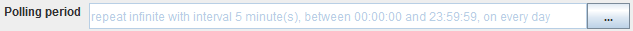

Email Listener

Topic content
Description
The Email Listener is an inbound channel which regularly scans an email account for emails matching certain search conditions.
Whenever a mail in the observed mailbox is found matching the search condition, the mail is read and its content is returned from the channel. For each recognized mail a start event is created containing the properties of the mail, e.g. a message containing its plain text content, a message containing its HTML content, a list of messages containing its attachments and also a list of messages containing embedded images. The exact number and type of output parameters depends on the configuration of the channel.
The Email Listener can use the protocols IMAP, POP3 and EWS (Excange web services) to access the Mailserver. See Email server connection for details.
The recognized mail always is deleted or (in case of IMAP) moved to another input folder to avoid that it is processed a second time.
The Email Listener returns at least two parameters MSG and HEADER. MSG is a Message containing the body of the mail, HEADER is a structured Message containing the Header fields of the mail. Depending on the configuration of the channel there may appear additional parameters like ATTACHMENTS, ALTMSG and IMAGES. See Configuration for details.
Purpose of object
The Email Listener serves as means to read mails and process its content by a Process model.
Creation
To create an Email Listener follow the steps described in the general description of Channels
Configuration
The dialog to configure the Email Listener looks like:
base view of the channel Email Listener
Step by Step
•Server entry The selected Email server connection containing the properties to connect to the mail server.
•User The user used to logon with the mail server. This is a User Credential of type technical user with user/password authentication.
•EMail filter here the user may enter a filter for the mails he is interested in. The filter expressions follow the pattern { (subject, from ) contains "<literal>" } and...
E.g. you could write from contains "Orchestra@mycompany.eu" and subject contains "error" if you want to process only mails from the sender address Orchestra@mycompany.eu containing the word error in the subject.
•Max simult. events Here the user may enter the maximum number of mails read at once. The Email Listener searches its mail box regularly. If the number of available mails matching the search condition exceeds the max number, the processing stops and the remaining mails are read next time.
•mail body In this section the processing of the mail body is configured:
oMime type pattern Select or change the expected Mime type of the text body of the mail. A MIME mail may contain its message text in several different formats. The Email Listener searches the mail content for the text content defined by the Mime type pattern. Typically a mail always contain the text as plain text. So the MIME type text/plain always works. The text content may additionally be contained as HTML-text. If you want the Email Listener to return the HTML-text, you can set text/html here. Because there exist different MIME types for HTML, e.g. text/html, text/xhtml or application/html, it is preferable to select the pattern */*html* in this case. If a mail server is merely used as a means to transfer technical content like CSV data, you have to set here the appropriate MIME type e.g. text/csv.
If this field contains an HTML type pattern, the Email Listener has two additional result parameters ALTMSG and IMAGES. The Parameter ALTMSG delivers a Message containing the HTML text as binary content, the parameter IMAGES delivers a Message list containing the embedded images of the HTML mail (if any).
oDeserializer Configure the Deserializer to parse the body of the mail and create the result message MSG. Along with this, one or more Stream filters may be added and configured. Having a general free format text as body text of the mail, it is preferable to select the Binary reader as _Deserializer.
There are two parsing modes parse on creation (the default) and parse on demand.
•parse on creation - the data are parsed by the selected deserializers while reading the byte stream. If in this process an error occurs, it is visible only in the log file because no process instance exists yet.
•parse on demand - the byte stream is read binary without interpreting it; together with the data the configuration of the selected deserializer is stored. If the message is accessed, e.g. by a mapping, it is parsed using the attached deserializer configuration. If the deserializer throws an error it can be handled by from the process instance.
•Attachment handling In this section the processing of the attachments is configured. If you select <no attachments> in the field Mime type pattern, no attachments are parsed. Otherwise the result variable ATTACHMENTS contains a Message list with the attachments.
oMime type pattern Select or change the expected Mime type of the mail attachments to be received. Only attachments matching the Mime type pattern are collected in the Message list ATTACHMENTS.
oDeserializer Configure the Deserializer to parse the attachments of the mail. Of course the selected deserializer must be able to parse the attachments. If you select * as Mime type pattern, you should select the Binary reader. Along with the deserializer one or more Stream filters may be added and configured.
•Polling Period:
Typically the channel searches its source for available data periodically:

To change the intervals at which the channel searches its data, the user clicks on the button labeled with three dots and then can edit the timer properties.
There are two types of timers, periodical timers and absolute timers. Both are configured using the same dialog. In most cases a periodically timer is used which regularly creates a signal.

timer configuration
•Description for the timer, e.g. polling timer
•Valid from/to Here the user can state a time span where the timer is valid. Outside of this time span, the timer is invalid and doesn't create events.
•Mode This Option is only sensible if the timer dialog is used to configure a timer event. In the context of channels it is disabled.
•Trigger type The user may restrict the timer to work only at certain days:
oDaily Here the user may restrict the timer to fire events on certain days of the week
oMonthly Here the user may restrict the timer to fire events at a particular day of the month
•Absolute If an absolute timer is configured, the user must enter a fixed time at which the timer raises an event. E.g. one could declare the timer to run every day at 6:00 in the morning.
•Periodically If an Periodical timer is used the user has to configure the following properties:
oStart/End time A time span of the day where the timer shall be active
oRepeat count Here the user may restrict the timer to fire only a certain amount of events after start. E.g. one could declare the timer to start at 6:00 AM an fire exactly 2 times. The standard value is infinite, that means there is no restriction.
oRepeat interval the time interval after which an event is fired periodically.
•Success action / Failure action After reading a mail it must be deleted or moved to another folder to ensure that the mail is not processes twice from Orchestra. For the success case and the error case the appropriate action is configurable independently. folders are not supported from POP3 so the move action is only available with IMAP.
See also
Use the Email Sender to send a mail to an email server.